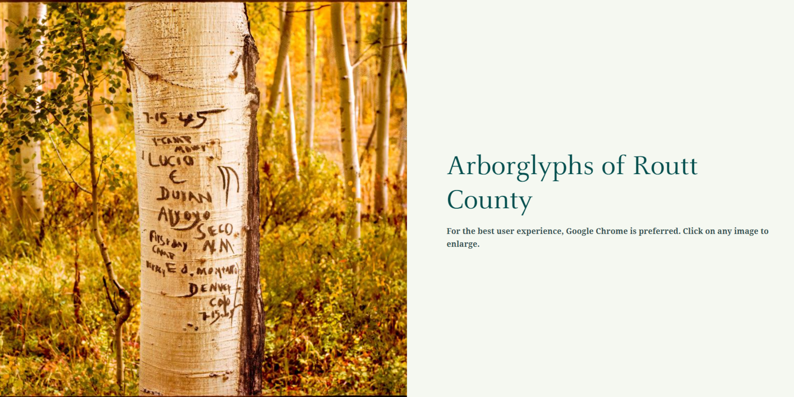
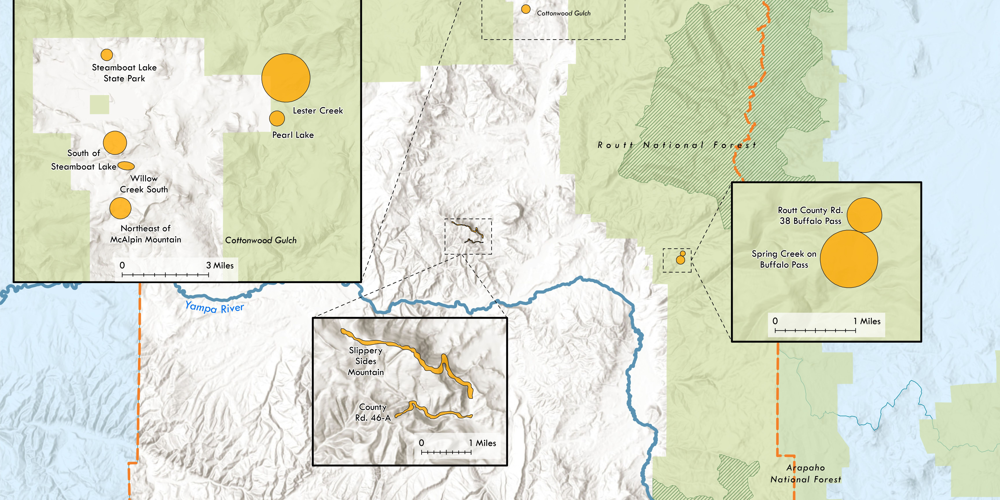
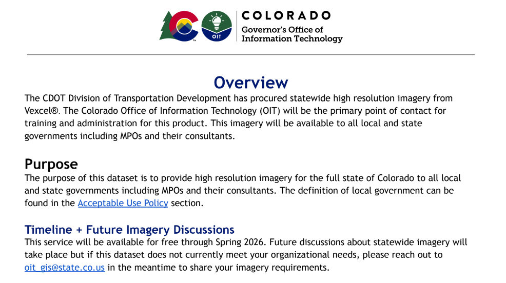
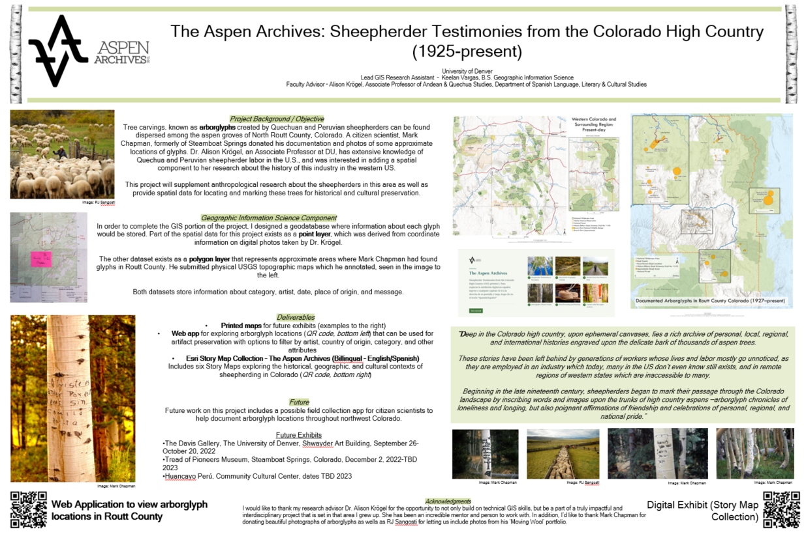

About Me
Hi, I’m Keelan. I’m a geospatial professional and cartographer with
a passion for designing clear, functional GIS systems, maps, and web applications.
I bring a broad technical skill set and experience across multiple industries, giving me a strong foundation in spatial analysis,
data management, and cartographic design. I enjoy building tools and visualizations that are both intuitive and informative.
Thanks for stopping by—feel free to explore my work below.
Education
University of Denver
B.S. Geographic Information Science
Minors: Computer Science, Math, Sustainability
Since graduating from the University of Denver in December 2021, I have worked as a GIS
Analyst in state government and energy infrastructure. Read about my past and present
positions on the Experience page.

As an undergrad, I was the GIS Lead on a research project with Dr. Alison Krogel to map the spatial
distributions of tree carvings, known as arborglyphs, to support her anthropological and historical
reserach on the history of contract sheepherding in the Western U.S.

Explore applications and other web GIS products I have created or contributed to on the Applications & Reports page.

Explore my cartographic work on the Cartography page.

The Skills page outlines my technical and soft skills, including examples of extensive
documentation and training that I have created.

The GIS Community page serves as a holistic overview of my participation in GIS conferences, awards, and certifications.
This page includes testimonials of my work and showcases my breadth of skill and industry experience.